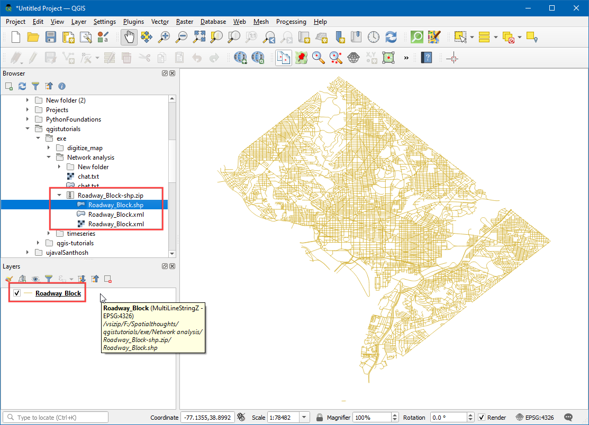
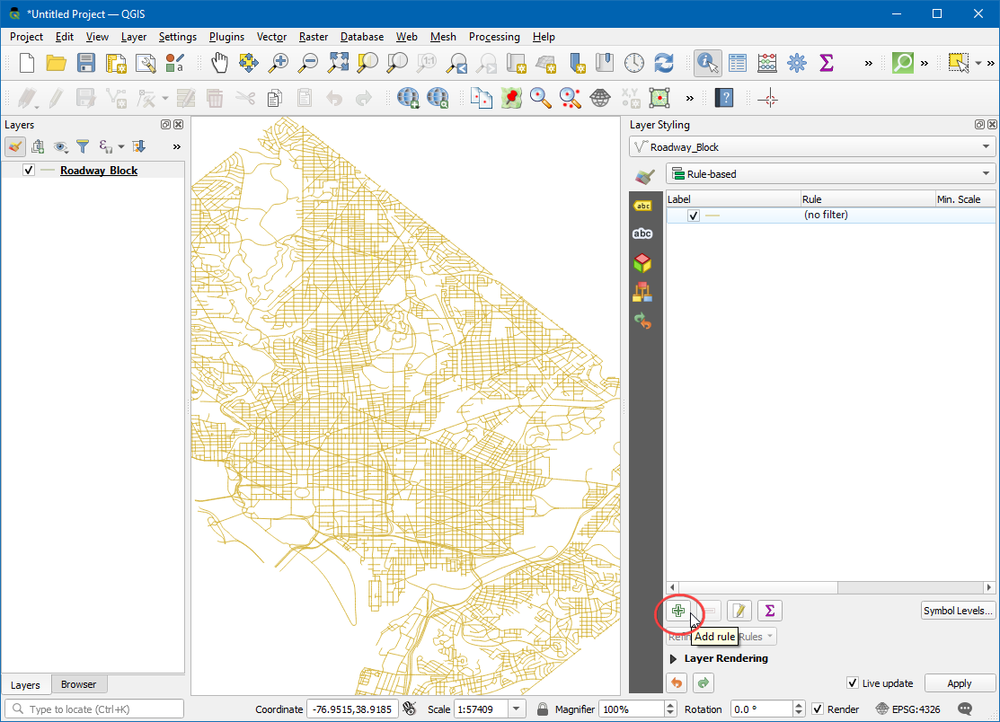

Osnove vizualizacije in usmerjanja omrežja (QGIS3)¶
Ustvarjanje, vizualizacija in upravljanje omrežij je pomemben del GIS-a. Številne vrste fizične infrastrukture, kot so ceste, železnice, komunalne storitve, je mogoče modelirati kot omrežja s črtami in vozlišči - z lastnostmi, ki so jim pripisane. V tej vadnici bomo spoznali, kako se običajno modelirajo cestna omrežja, in uporabili nekaj tehnik oblikovanja za vizualizacijo lastnosti poti. Uporabili bomo tudi vgrajena orodja QGIS3 za analizo omrežij, s katerimi bomo našli najkrajšo pot med dvema točkama skupaj z omrežjem.
Pregled naloge¶
Vzeli bomo sloj cestnih blokov za Washington DC, vizualizirali povezljivost in zgradili omrežje za iskanje najkrajše poti med katerima koli dvema točkama v mestu.
Druga znanja, ki se jih boste naučili¶
Kako uporabiti podatkovno opredeljeno prekrivanje, definirano s podatki, za poravnavo simbola puščice glede na smer.
Pridobivanje podatkov¶
Vlada okrožja Columbia prosto deli na stotine podatkovnih nizov na portalu Open Data Catalog.
Prenesite Roadway Block deljeno s podatki DCGISopendata kot datoteko shapefile.

Zaradi priročnosti lahko kopijo zbirk podatkov neposredno prenesete s spodnjih povezav:
Vir podatkov: [DCOPENDATA]
Postopek¶
Na plošči Browser poiščite preneseno datoteko
Roadway_Block-shp.zip. Razširite jo in povleciteRoadway_Block.shpna delovno površino.

You will see a new line layer called
Roadway_Blockadded to the Layers panel. This layer represents each road in Washington DC. Select the Identify tool in the Attributes Toolbar. Click on any road segment to see what attributes are attached to it. There are standard attributes like Route-name, Road-type etc. there is an attribute calledSUMMARYDIR. This is an important attribute for routing as it specifies whether the segment is two-way or one-way. It contains 4 different values.BD(Both Directions) for two-way streets.OB(Out Bound) for one-way streets where the traffic is allowed in the direction of the line (start-point to end-point) andIB(In Bound) for one-way streets where the traffic flows in the opposite direction of the line. There is also??value where we will assume two-way traffic. We will now use the information in that attribute to display an arrow on one-way streets.

Kliknite gumb Open the layer Styling Panel na plošči Layers. V spustnem meniju izberite upodobitev
Rule-based.

Ustvarili bomo nov slog s filtrom samo za enosmerne ceste. Kliknite gumb Add rule +.

V pogovornem oknu Edit rule kliknite gumb Expression.

V pogovornem oknu Expression string builder razširite razdelek Fields and Values v srednjem polju. Izberite atribut
SUMMARYDIRin kliknite All Unique` na desni plošči. Pojavile se bodo 4 vrednosti, o katerih smo govorili prej. To, da so te vrednosti tukaj kot referenca, nam pomaga pri sestavljanju izraza. Prav tako lahko dvakrat kliknete na katero koli vrednost, da jo dodate v izraz.

Cilj je ustvariti izraz, ki izbere vse enosmerne ulice. Vnesite naslednji izraz in kliknite OK.
"SUMMARYDIR" in ('IB', 'OB')
Nato spremenite Symbol layer type v
Marker line.

V razdelku Marker placement (Postavitev oznake) izberite
on center point.

Kliknite na simbol
Simple marker. Pomaknite se navzdol in izberite oznakofilled_arrowhead. Videli boste, da se simbol v obliki puščice zdaj prikazuje na enosmernih ulicah. Vendar vse kažejo v eno smer, medtem ko vemo, da naš filter vsebuje ceste v več smereh. Simbole lahko še dodatno izpopolnimo s podatkovno opredeljeno prevlado za vrednost Rotation.

Kliknite gumb Data defined override poleg Rotation.

Vnesemo lahko pogojni izraz, ki vrne različne vrednosti vrtenja glede na enosmerno smer. Obrat za 180° za cesto v nasprotno smer bo oznaka smeri popolna, V tem primeru bomo ceste z atributom
IBobrnili za 180°, zato bodo vse ceste imele pravilno smer prometnega toka. Vnesite naslednji izraz in kliknite OK.
if( "SUMMARYDIR" = 'IB', 180, 0)
Zdaj bodo puščice poravnane s pravilno smerjo vožnje. Da bi slog ostal pregleden, smo se odločili, da bodo puščice prikazane samo na enosmernih ulicah. Za neoznačene ulice velja, da so dvosmerne. Zdaj, ko je omrežje pravilno oblikovano, lahko opravimo nekaj analiz. Pojdite na .

Poiščite in najdite algoritem . Z dvoklikom ga zaženite.

V pogovornem oknu Najkrajša pot (od točke do točke) izberite
Roadway_Blockkot Vector layer representing network`. Naj bo v polju Path type to calculate (vrsta poti za izračun) izbrana vrednostShortest(najkrajša). Nato moramo izbrati začetno in končno točko. Kliknite gumb … in na platnu kliknite na katero koli točko v omrežju. Če želite ponoviti rezultate iz tega priročnika, lahko kot začetna točka vnesete-76.99730092166396,38.887624846748984in kot končna točka-76.99154831062152,38.89151000569929. Razširite razdelek Advanced parameter. IzberiteSUMMARYDIRkot Direction field. Poznati morate vrednosti enosmerne smeri za prometni tok naprej in nazaj. VnesiteOBkot Vrednost za smer naprej inIBkot Vrednost za smer nazaj. Ostale možnosti pustite na privzetih vrednostih in kliknite Run.

Algoritem bo za izgradnjo mrežnega grafa uporabil geometrijo sloja in navedene parametre. Ta graf se nato uporabi za iskanje najkrajše poti med začetno in končno točko. Ko algoritem konča, se na plošči Layers doda nov sloj
Najkrajša pot, ki prikazuje najkrajšo pot med začetno in končno točko.

Videli boste, da je med začetno in končno točko veliko možnih poti. Toda glede na omejitve omrežja, kot so enosmerne poti, je rezultat najkrajša možna pot. Vedno je dobro, da potrdite svojo analizo in predpostavke. Enostaven način za potrditev je, da uporabite kartografski prikaz druge osebe in preverite, ali se njihovi rezultati ujemajo z vašimi rezultati. Tukaj je najkrajša pot, ki jo je predlagal Google Maps <https://goo.gl/maps/XwTXTkvuaCuteocr8>`_ med isto začetno in končno točko. Kot lahko vidite, se priporočena najkrajša pot popolnoma ujema z našimi rezultati - s tem je naša analiza potrjena .

If you want to give feedback or share your experience with this tutorial, please comment below. (requires GitHub account)